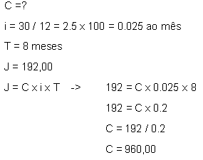

Portfólio de Matemática
Mateus Mazon Parcianello

Acredito que os juros estarão no tópico de facilidades de todo mundo, por ser um conteúdo em que já fomos familiarizados antes do ensino médio, então aprender eles agora ficou mais fácil, porém agora com novos elementos que foram aprendidos durante o primeiro ano.
Juros simples foi um conteúdo já visto anteriormente, agora foi basicamente apenas revisado.
O tipo de juros mais utilizado e em grande parte mais lucrativo, é o juro composto. Porém eles não se diferem muito, a única coisa que muda é a função do n(prazo), que no simples multiplica o valor e no composto eleva o valor. Então dependendo o caso, um juro simples pode ser mais lucrativo a curto prazo do que um juros composto, ou um juro composto pode ser mais lucrativo do que juros simples a curto prazo, Conforme mostrarei depois.
Como se pode perceber, o gráfico do juros simples segue uma linha reta(função afim) e o gráfico do juros compostos formam uma curva(função exponencial), e essa é a principal diferença entre eles e o motivo dos dois serem melhores em certas ocasiões.
Com juros simples:
1-Num balancete de uma empresa consta que certo capital foi aplicado a uma taxa de 30% ao ano durante 8 meses, rendendo juros simples no valor de R$ 192,00. O capital aplicado foi de:
Com juros compostos:
2-Aplicando hoje na caderneta de poupança a quantia de R$ 20.000,00, qual será o montante gerado ao final de 4 anos, sabendo que a rentabilidade mensal é de 0,5%?
Juros Simples
Juros Compostos
questões pegas no site: Brasil Escola
Links obtidos clicando nas imagens